Dove lavoriamo
Impresa di traslochi con sede a Inzago (MI). Sopralluogo e preventivo gratuiti, risposta in giornata.
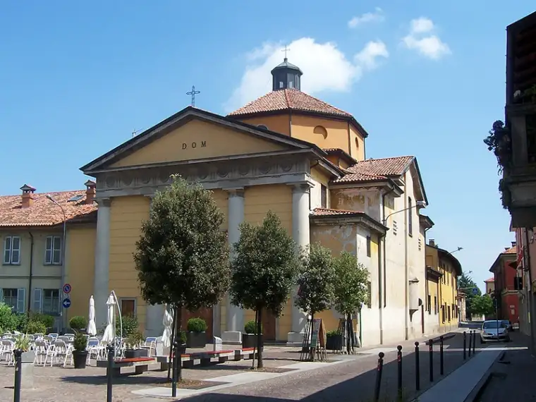
Pozzuolo Martesana, Trecella e Bisentrate sono a pochi chilometri dalla nostra sede: una zona di case indipendenti dove spesso serve spostare anche quello che c’è in cantina, in box o in giardino.
Operiamo anche a Melzo, Liscate, Truccazzano e Vignate.
Imballaggio di mobili, oggetti fragili ed effetti personali; fornitura di scatole e materiale protettivo; smontaggio e rimontaggio degli arredi; carico, trasporto e scarico; movimentazione di oggetti ingombranti con attrezzature dedicate; scala aerea quando serve; coordinamento dei permessi per l’occupazione del suolo pubblico. Le attività incluse vengono sempre indicate per iscritto nel preventivo.
Il prezzo dipende dalla quantità di arredi, dai piani di partenza e di arrivo, dalla presenza e dalle dimensioni dell’ascensore, dalla distanza e dai servizi richiesti. Per questo il sopralluogo è gratuito: ti diamo un preventivo scritto, senza sorprese in fattura.
Servizi disponibili a Pozzuolo Martesana
Case, uffici e aziende a Milano, provincia e Brianza. Imballaggio, smontaggio, trasporto e rimontaggio.
Fino a 45 metri, sempre con operatore. Quando l’ascensore è piccolo o le scale sono strette.
Custodito in ambienti protetti e controllati, per pochi giorni o per diversi mesi.
Appartamenti, cantine, box e uffici, con smaltimento in discarica autorizzata già compreso.
Anche per un solo mobile o poche scatole, senza organizzare un trasloco completo.
Tinteggiatura, cartongesso, parquet, montaggio porte e pulizie post cantiere.
Altre zone in cui lavoriamo
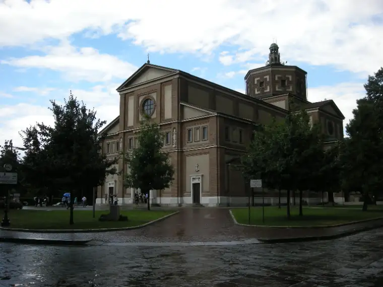
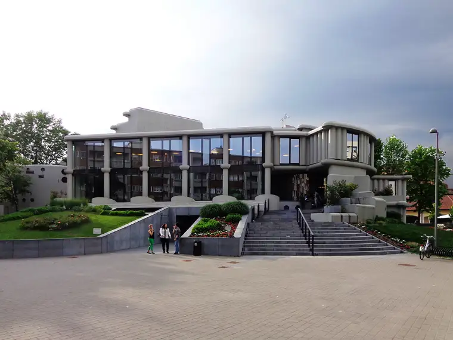
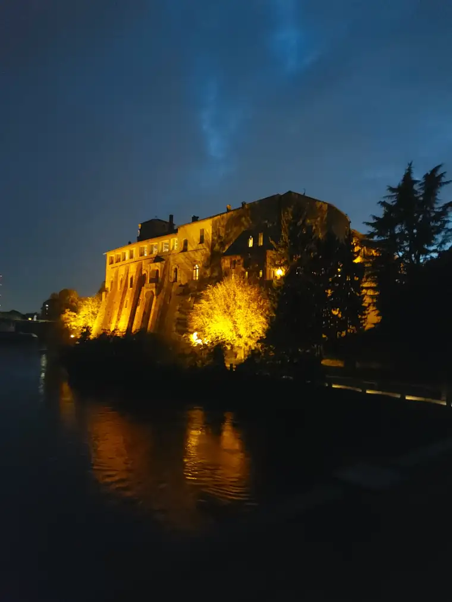
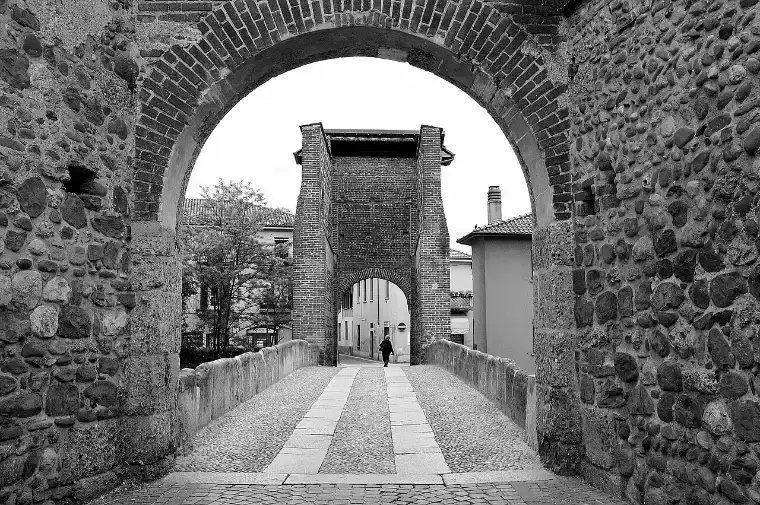
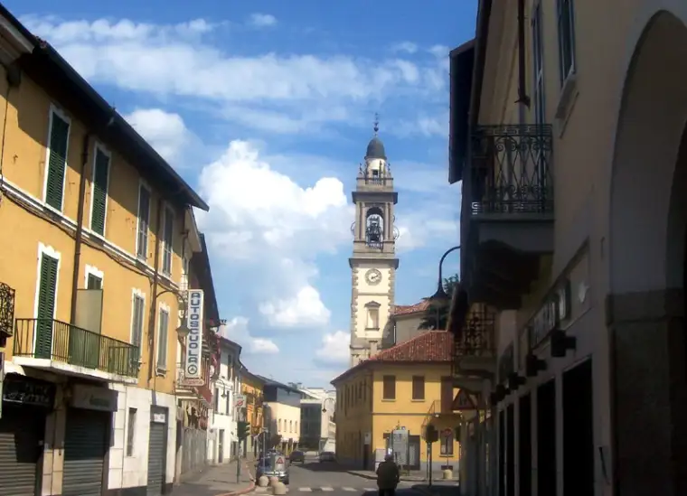
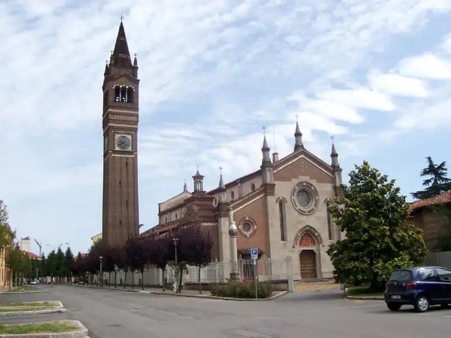
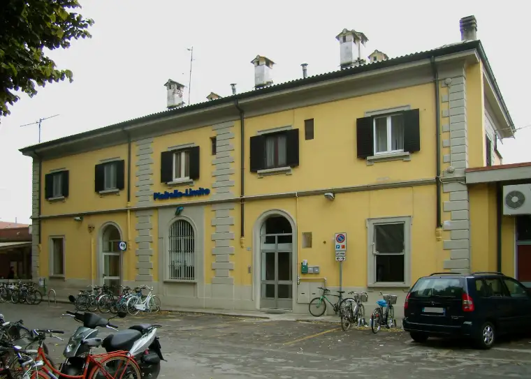
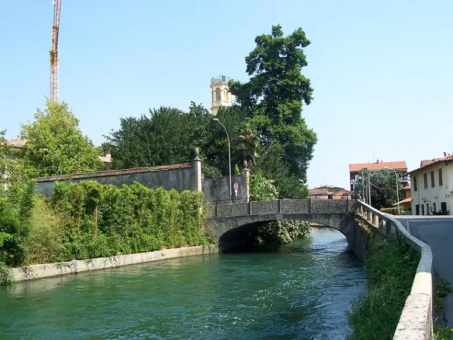
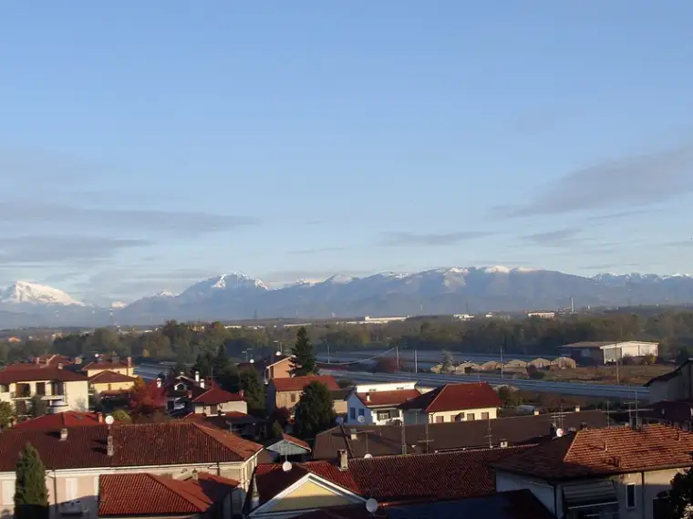
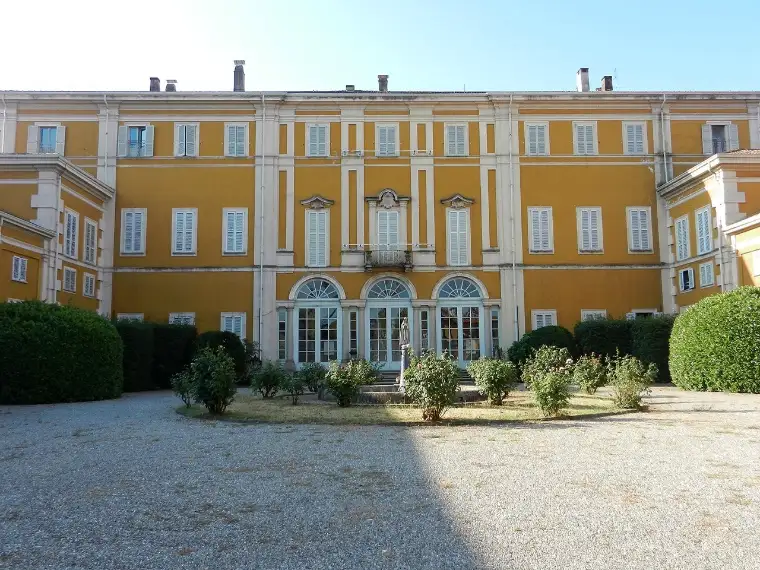
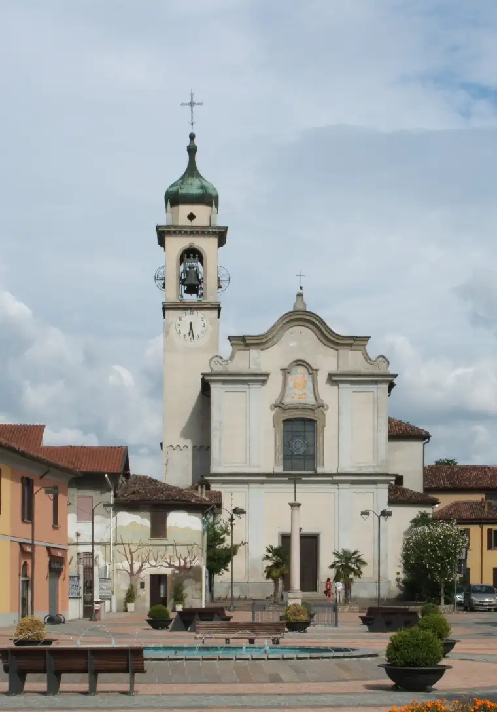
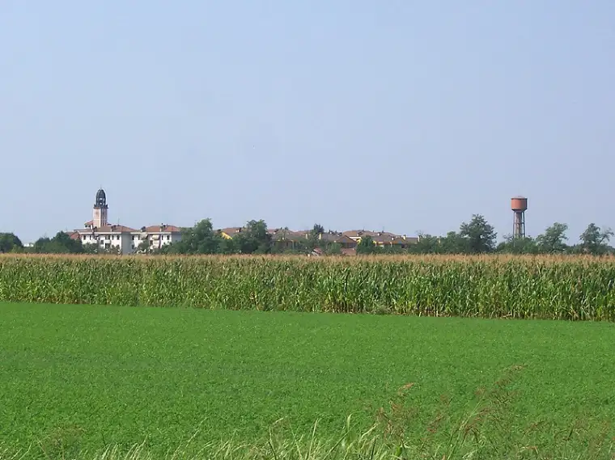
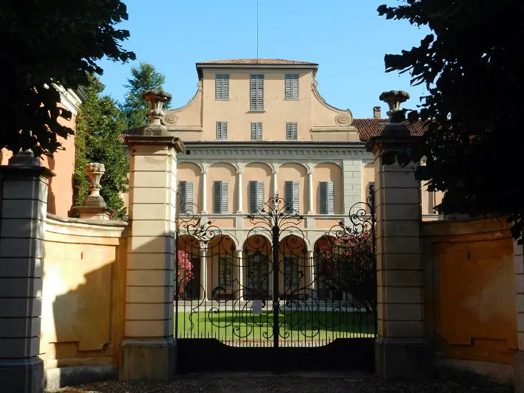
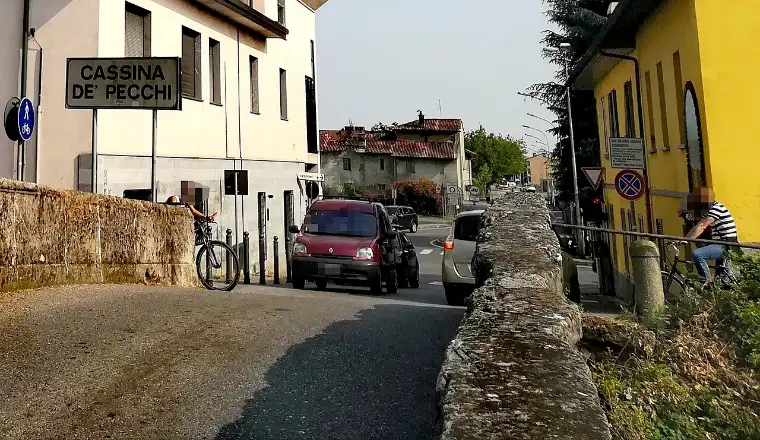
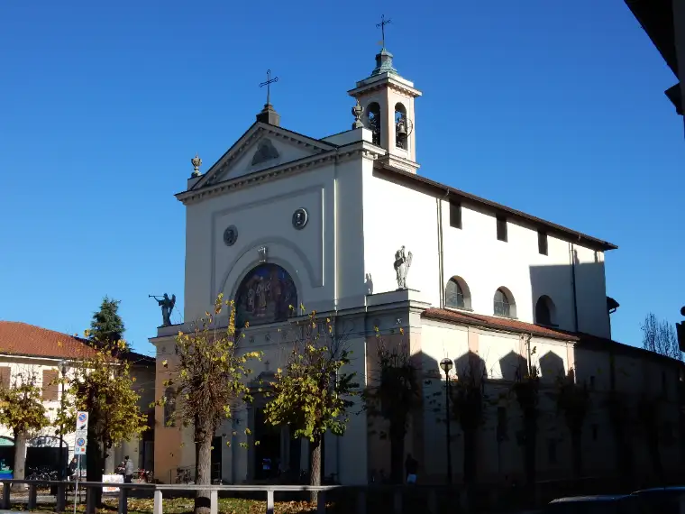
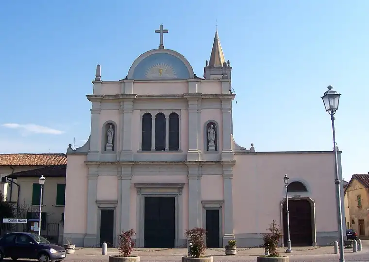
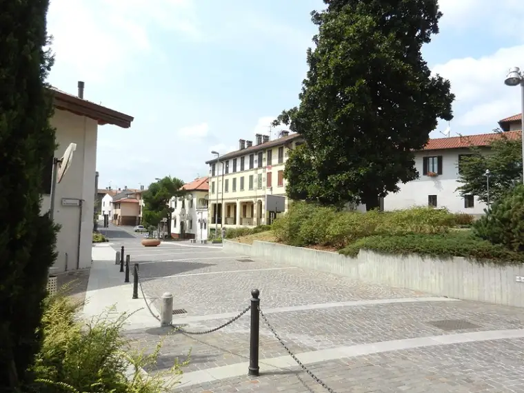
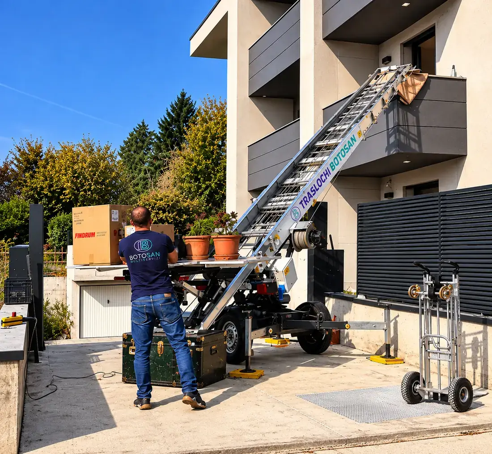
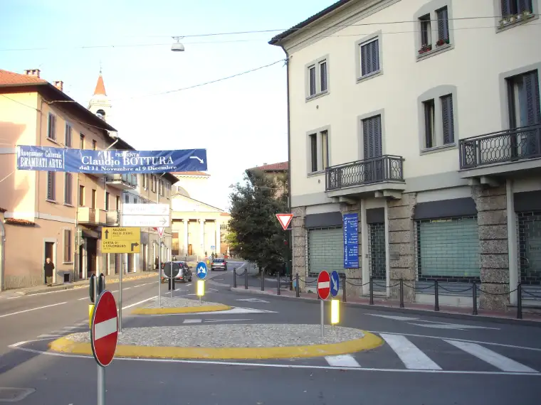
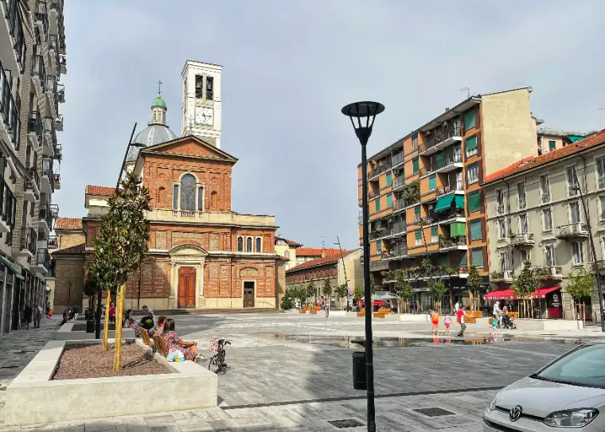
Sopralluogo e preventivo gratuiti, senza impegno. Ti rispondiamo in giornata.
Affidati a noi per un trasloco senza stress: smontaggio, imballaggio, trasporto e rimontaggio. Ogni fase seguita da personale nostro, con preventivo chiaro e sopralluogo gratuito.
Scopri di piùSpostiamo uffici e attività nel fine settimana o fuori orario, per non fermare il lavoro: arredi, archivi e postazioni numerati e rimontati nella nuova sede.
Scopri di piùScale fino a 45 metri per caricare da balconi e finestre dove le scale interne non bastano: sicure, veloci e senza danni a mobili o pareti.
Scopri di più